조건부 변분 오토인코더(CVAE)와 레이어 합성 기반
픽셀 스프라이트 자동 생성 및 시각화
키워드(동작·의상·헤어) 입력 → 64×64 RGBA 스프라이트 5개 레이어를 각각 생성 → alpha composite로 합성한 완성 캐릭터를 실시간 제공하는 Streamlit 데모 앱 구현
TensorFlow ↔ PyTorch 이중 구현으로 동일 아키텍처를 교차 검증.
Apple Silicon(Metal/MPS) 환경에서 학습. 각 단계별 결과를 노트북 01~10으로 모듈화하여 재현성 확보.
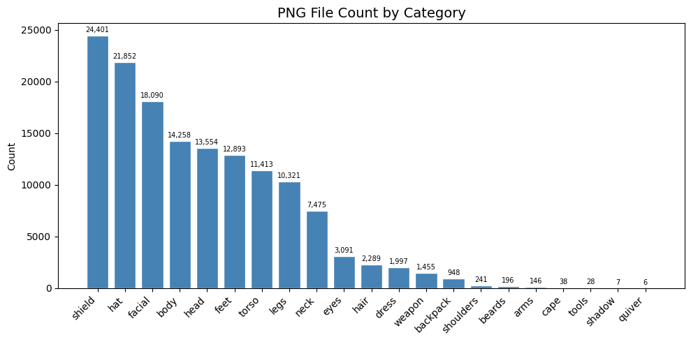
출처 · Liberated Pixel Cup(LPC) 공개 픽셀 스프라이트셋. 모든 프레임이 동일한 64×64 RGBA 규격으로 설계되어 레이어 합성에 적합.
구조 · body / torso / legs / feet / hair / hat / wings / tail 등 26개 카테고리. 각 카테고리는 키워드 서브폴더로 세분화하여 fine-grained 레이블을 부여.
body에 혼재된 항목 분리: wings(100,264)·tail(93,590)·wound(2,528), zombie/skeleton(356) 삭제 → 순수 body 2,272장
body 좌우반전(FLIP_LEFT_RIGHT)으로 2배 확장 → 4,544장. macOS spawn 충돌 회피 위해 ThreadPoolExecutor 사용.
파일명 첫 토큰 기준 분리로 레이블 노이즈 제거. fine-grained 조건 부여 → 86 클래스 확보.
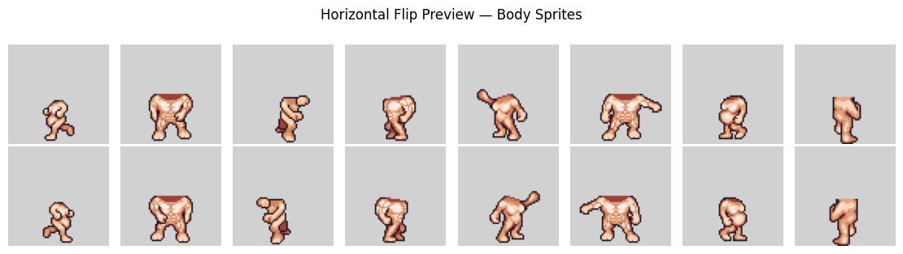
구조화된 잠재공간 · VAE는 연속적·정규화된 잠재공간 z를 학습해, 본 과제의 핵심인 잠재공간 보간·latent arithmetic·속성 제어가 가능하다. (인코더가 없는 순수 GAN은 이러한 잠재 조작이 어렵다.)
레이블 조건부 생성 · VAE는 인코더·디코더에 레이블을 주입하는 CVAE로 자연스럽게 확장되어, 동작·의상 등 키워드 조건부 스프라이트 생성과 레이어 합성을 일관된 구조로 구현할 수 있다.
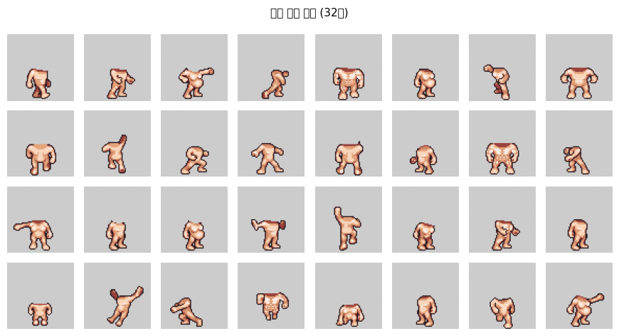
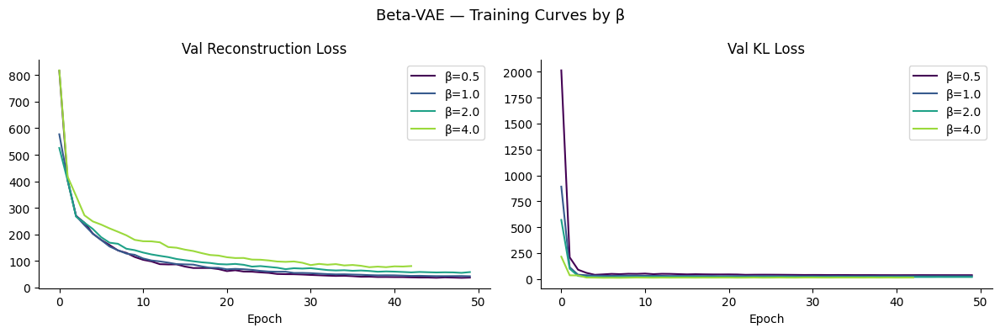
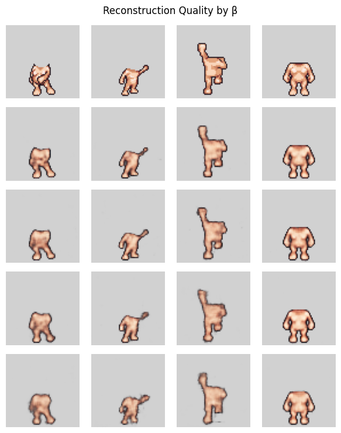
손실 L = Recon + β×KL에서 KL 항의 가중치. β↑ 이면 정규화·disentanglement가 강해지지만 재구성 품질은 저하. β=1.0은 표준 VAE.
body는 동질성 높은 인체 형태 위주 → β를 높일수록 KL이 잠재공간을 과도하게 압축해 디테일이 뭉개짐(β=4.0). β=1.0(표준 VAE)이 최적 복원 품질로 최종 선택.
현상 · 어떤 입력을 넣어도 동일한 "평균 이미지" 출력. 인코더가 입력을 무시(kl≈0.001, σ≈1.0).
원인 · MSE는 16,384개 픽셀 평균, KL은 256개 원소 평균 → Recon이 KL보다 ~64배 크게 정규화되어 KL이 학습에 기여하지 못함.
- recon = mse_loss(x̂, x, reduction='mean') - kl = -0.5 * mean(...) + recon = mse_loss(x̂, x, reduction='sum')/B + kl = -0.5 * sum(...)/B
| 지표 | 수정 전 | 수정 후 |
|---|---|---|
| kl_loss | ~0.001 | 35~39 |
| μ 절댓값 평균 | ~0.02 | 0.30~0.37 |
| σ 평균 | ~1.000 | 0.87~0.96 |
BatchNorm momentum(0.99 vs 0.1) 차이로 running stats 갱신 10배 차 → momentum=0.9로 통일. 가중치 초기화·padding·LR 단위 차이도 분석·정리.
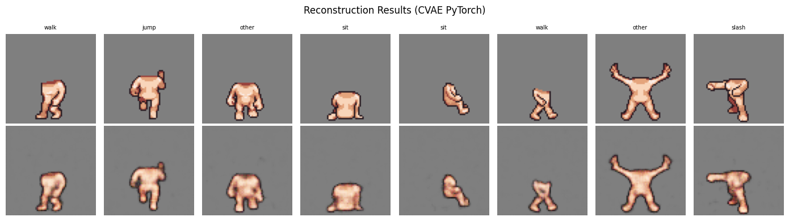
| 구현 | val_loss | recon | KL |
|---|---|---|---|
| TensorFlow (β=1.0) | 59.47 | 33.05 | 21.79 |
| PyTorch (β=1.5) | 61.54 | 33.40 | 23.49 |
잠재공간 구멍(hole) · N(0,I) 순수 샘플링 시 일부 z가 학습분포 밖에 착지해 뭉개짐 → PyTorch β=1.5로 KL 정규화 강화해 해소.
레이블 반응 미미 · 정보 대부분이 z에 담겨 레이블 간 포즈 차이가 작음 → 레이블 임베딩 강화·KL 조정 필요.
Perceptual Loss란? 픽셀 단위 차이(MSE) 대신 사전학습된 VGG16의 중간 feature 차이를 비교하는 손실로, 사람이 지각하는 질감·윤곽을 살려 더 또렷하고 자연스러운 복원을 유도한다.
최종 모델 · PyTorch β=1.5 + Perceptual Loss (λ=1.0) — 조건부 생성 안정성·복원 품질 모두 우수. checkpoints_cvae_pl_pt/
| lambda | 전처리 | 결과 |
|---|---|---|
| 0.05 | to_vgg [0,1] | MSE 대비 0.6% — 시각 차이 없음 |
| 0.5 | to_vgg [0,1] | MSE 대비 6% — 시각 차이 없음 |
| 1.0 | to_vgg_scaled | TF 0.05와 동등 — 최종 적용 |
to_vgg([0,1])는 perceptual 값이 MSE 대비 미미(~4)해 무효. to_vgg_scaled([0,255] BGR, TF 방식)로 스케일을 통일해야 강하게 작동(~수만).
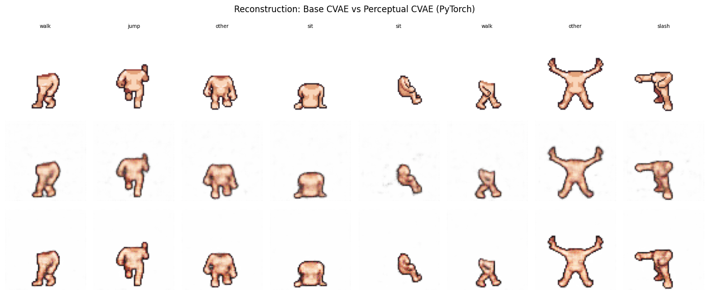
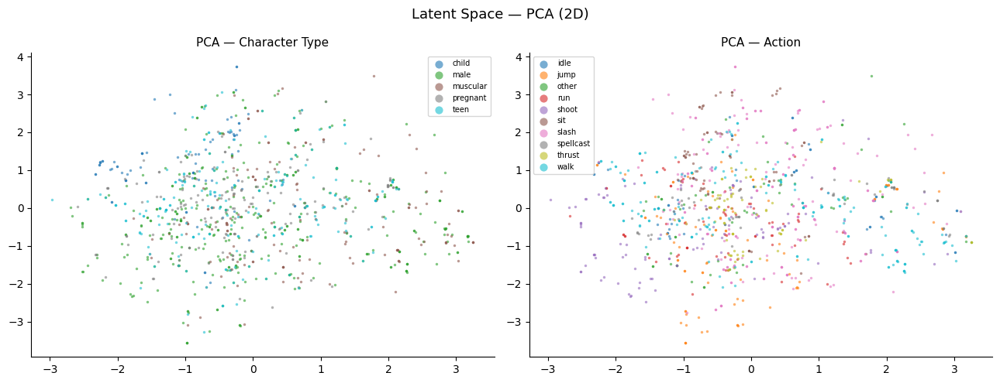
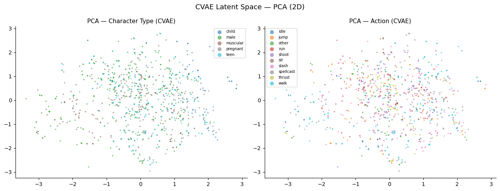
PCA·t-SNE·UMAP 모두 캐릭터/액션 라벨로 색칠해도 뚜렷한 분리가 없음 — 레이블 없이 비지도로 학습해 의미 속성이 자동 정렬된다는 보장이 없기 때문.
CVAE는 z가 "레이블로 설명 안 되는 나머지 정보"만 담아 std가 전반적으로 더 낮음(전체 0.32 < VAE 0.36).
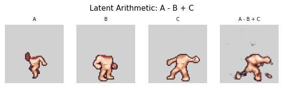
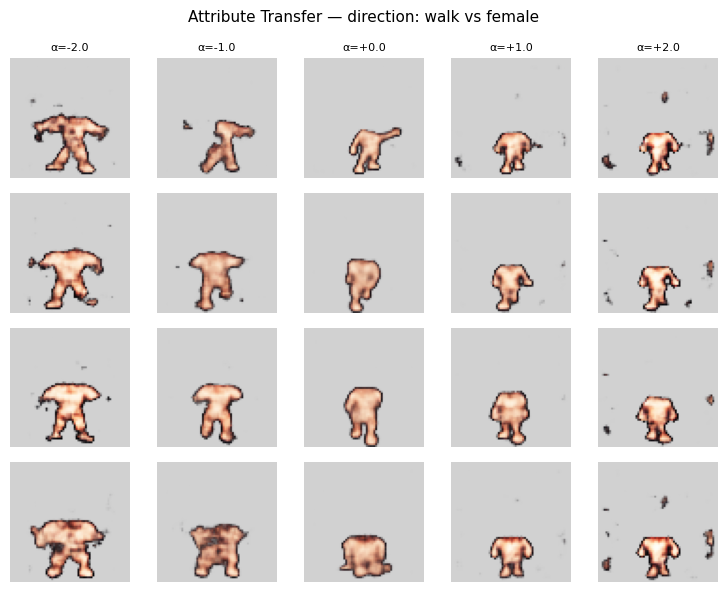
mean(z_A) − mean(z_B)로 속성 방향을 구함.z + α×방향벡터로 α 부호에 따라 속성이 전이. α가 과대(±2)하면 잠재공간 유효범위를 벗어나 디코더 출력이 뭉개짐 → 0.5~1.0부터 점진 증가가 적절.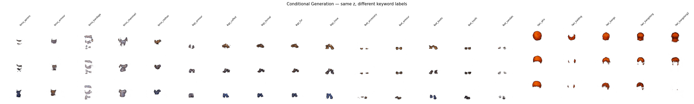
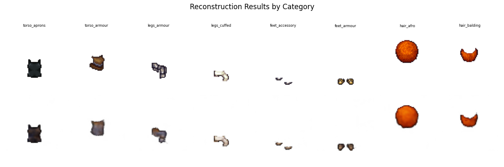
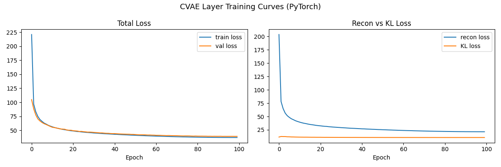
| 지표 (최종 epoch) | 값 |
|---|---|
| Total Loss · train | 37.30 |
| Total Loss · val | 39.35 |
| Reconstruction (train) | 21.40 |
| KL Divergence (train) | 10.60 |
L = Recon + β·KL = 21.40 + 1.5×10.60 ≈ 37.30 (β=1.5 확인). 검증은 total loss만 기록(recon·KL 분해 미기록). 86 클래스(torso 7 + legs 12 + feet 8 + hair 59) 단일 CVAE · 100 epoch · max_per_class=2000.
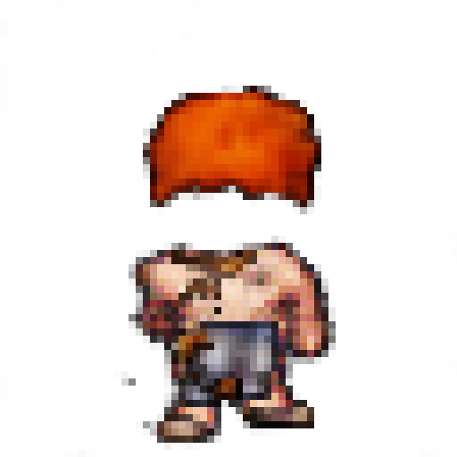
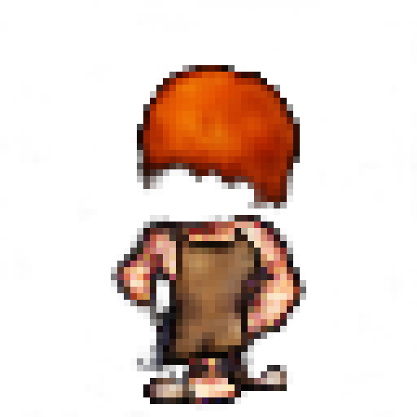
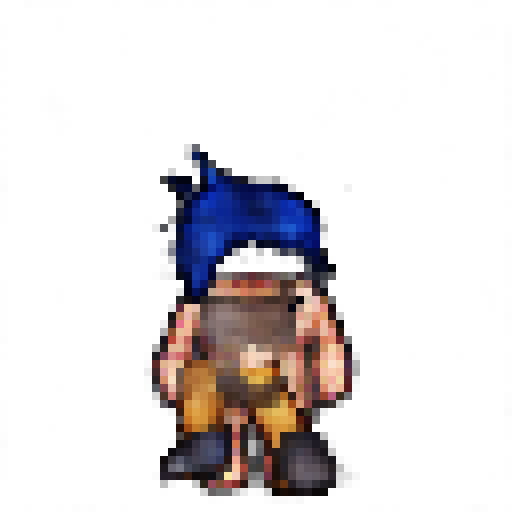
키워드를 조합해 5개 레이어를 각각 CVAE로 순수 생성(원본 미사용)한 뒤 alpha composite로 합성.
각 레이어 CVAE decoder에 z ~ N(0,I) + 레이블 → 64×64 RGBA 생성 → 레이어 순서대로 PIL alpha_composite → 256×256 nearest-neighbor 업스케일 표시. Generate마다 새 z → 같은 키워드도 다른 색상·스타일.
게임 프로토타이핑·에셋 초안 자동화. 키워드 기반 캐릭터 변형으로 디자인 탐색 단계의 반복 비용 절감.
| 한계점 | 개선 방향 |
|---|---|
| 64×64 저해상도 | 고해상도 / Diffusion 모델 확장 |
| 레이블 반응 미미 (정보가 z에 집중) | 레이블 임베딩 강화 · KL 가중치 조정 |
| 일부 레이어 클래스 데이터 불균형 | 데이터 확충 · class-balanced 샘플링 |